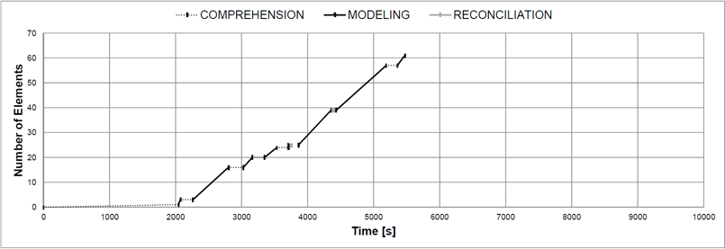

Deliberate Before You Formalize
The phase diagram depicted below shows a rather long initial comprehension phase after which alternating comprehension
and modeling phases can be observed. All modeling phases are very long and
steep, i.e., much model content is added per iteration. Virtually no reconciliation can be
observed.

Measuress
This process as showing
a large chunk size (7.63) and a low number of iterations (8). We do not observe
reconciliation breaks. The share of time spent on comprehension is relatively small at
38% (note that our specific measure neglects the first comprehension phase).
Modeling Strategy
Replaying the modeling process using Cheetah Experimental Platform shows that the modeler
appears to have a clear conception of the model to be created. Elements are placed on
the canvas in large chunks, while all elements are being placed to appropriate positions
so that no movement of elements is required.We characterize this strategy as 'deliberate
before you formalize'.
Modeling Result
The created model is free of syntax errors and behavioral anomalies,
such as deadlocks. But due to some superfluous activities, there is an average approximation
of the expected modeling outcome in terms of graph edit distance.